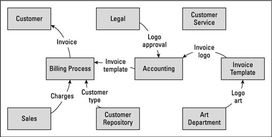
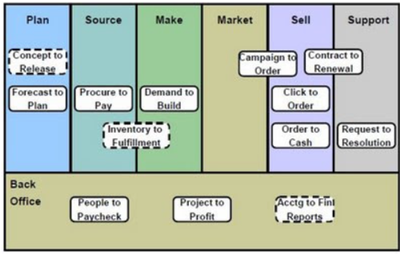

전략에 대한 방향성이 수립되면 거기에 맞는 프로세스 혁신으로 올바른 절차만 따르다면 효과적으로 시간과 비용을 줄일 수 있는 방법을
제시하고자 한다.
대부분은 전략, 기업가치, 포트폴리오 매니지먼트 이러한 부분은 기존의 업무 프로세스에서 발생한 데이터를 가지고 별도로
사람들의 수 작업이나 별도의 업무로 생각한다.
이제는 이러한 정성적인 부분들도 업무 프로세스에 포함시켜 처리할 시점에 도달했다고 생각한다. 이러한 의미가 기존에
의사결정 시스템이나 경영자 레벨에서 판단할 수 있도록 단순히 계획대비 실적을 모아서 보여주는 것을 의미하지 않는다.
시간이 지나도 우리에게 필요한 기존 업무 요소(설계,구매,고객 인도)는 동일하지만 처리하는 방식은 이제 달라져야 한다.
이 일은 표준화된 업무에 맡기고 보다 정성적인 업무에 직원들이 집중할 수 있도록 프로세스를 혁신해야 한다.
요즘은 해외 여행을 할때 웹을 이용 전 세계 호텔의 가격, 편의정보를 확인하고 예약부터 정산까지 진행한다. 기존의 호텔 프론트에서 하던
업무들의 상당 부분이 변화를 했다는 것이며, 이처럼 일반 제조기업에서도 이러한 부분이 착안할 필요가 있다.
출장갈 목적과 장소가 정해졌다면 출장가기 위해 품의를 하고 승인을 받고 그 과정에서 요구되는 정보를 처리하기 위해 이것 저것 시간을
보내고 있다면 그 것이 올바른 프로세스 인가 ?
기업 내의 일도 많은 부분이 회의에서 구두로 진행되는 것이 잦다. 만일 최종 합의된 내용을 구두로 정리하면 AI가 그 것을
Text화 하고 정보처리하여 업무가 그 다음으로 진행할 수 있도록 하면 어떨까 ?
이제는 프로세스 혁신에서 핵심과 비 핵심을 구분하여 그 것을 처리하는 업무 방식을 고민할 시기이다.

Image source ( https://www.dummies.com/business/business-strategy/how-to-define-business-analysis-scope-with-a-data-flow-diagram/ )
지금 대안이 될 수 있는 방안은 모든 것을 우리가 직접하는 것이 아니라 빌려서 사용하는 것이다.

( Image source )
배경
우리가 일하는 방식이 얼마나 효율적인가는 얼마나 우리가 사업의 변화에 빠르게 일하는 방식, 필요한 솔루션을 자유롭게 사용하며
변경할 수 있는 유연성이 될 것이다. 이유는 고객과 시장이 수시로 바뀌고 계속하여 새로운 기술들이 나오고 있기 때문에 누가 얼마나
적은 비용으로 효과적으로 그것을 사용할 수 있는 능력이 될 것이다.
그동안 프로세스는 개별 단위 프로세스를 어떻게 잘 처리하고 관련된 프로세스와 데이터 연결에만 집중하여 운영되어 왔다.
프로세스 혁신에 들어가기 전에 이러한 부분에 인식이 우선 필요하다. 현재의 프로세스가 기업이 궁극적으로 추구하는 전략의
실행으로 기업가치를 높이는 것에 효과적으로 대응하는 것인가 하는 의문이다.
전쟁에서 개별 무기를 다루고 거기에 필요한 탄약을 공급하는 것은 기존의 업무 프로세스이며, 승리를 위한 전략이나
그 것을 위한 전투 방법, 시간이 지남에 따라 병력의 이동이나 전진하는 목표 지점들에 대하여 함께 분석하고 처리하는
것이 기업의 모든 업무를 망라하는 것이다.
이러한 것들이 현재 효율적으로 관리되고 있는가, 대부분의 기업은 경영관리,
전략, 기획부서 조직에서 밀실에서 계획대비 실적 자료와 별도의 수주, 시장, 기술 관련 정보를 함께 책상 위에 두고
사람의 판단으로 업무 프로세스와는 별개로 진행을 하고있다. 이 것은 마치 요즘 최신 전쟁 시물레이션 게임에서 처럼
말단 개인병사들의 전투 상황까지 종합하고 의사결정하는 상황과는 상당히 거리가 있는 모습이다.
수술실에서 환자를 수술하고 있는 하나 하나의 행위는 업무 프로세스 이며 이 과정에 따른 환자의 상태가 여러
모니터에서 표시되고, 사용 중인 수혈 및 당초 계획한 수술 계획에 따른 상황을 종합할 때 수술 상황이 종합적으로
관리되고 있다고 하겠다.
현재 사용 중인 ERP와 개발 프로그램들을 자세히 살펴보면 그 한계를 알 수 있다. 이제는 단순히 업무만
효율적으로 잘 해선 경쟁력을 갖출 수 없는 시대이다.
생각을 넓혀보면 의외로 이러한 부분이 많다는 것이다. 구매할 물건이 정해졌다면 적정한 가격에 신속하게 구매하면 되는데,
그 자체를 진행하기 위해 예산을 확인하고, 구매 전략, 일정, 각종 구매관련 정보를 등록하는 일에 구매자가 시스템을 뒤지면서
시간을 보내고 있다면 되겠는가 ?
어찌 보면 이러한 것들이 이 전에 전표로 하던 것들을 잘 정리된 Sheet로 하다가 이제는 단순히
전산화를 한 것이 여지껏 사용한 것이 아닐까 생각해 본다.
미국 수사물 드라마를 보면 많은 중요한 정보는 관련된 수사관들이 협의하면서 논의하고, 필요한 정보는 그때 그때 마다
컴퓨터로 확인하고 최종 의사결정되어 현장에 각자 뛰어다니는 모습을 보게된다. 수사관이 수사계획을 시스템에 등록하는
절차가 아니라는 것이다.
우리가 집중해야 할 업무들
Project Management : Risk, Contract, Schedule, Cost Management에서 우리가 시스템의 도움을 받는 것과 실제로
우리가 의사결정하는 일을 되집어 보고, 업무 프로세스를 핵심을 구분하고 그 중에 반드시 사람이 할 것과 시스템에서 수행할
것들의 처립 방식을 우선 고민해 보자.
. Risk & Communication : Risk의 사전 인식과 대응, 고객과 원활한 Communication
. Contract : Contract 이전과 이후의 이슈관리
. Schedule : Project Schedule에서 전망관리
. Cost Management : Project Cost Management
Digital Process Innovation 실행 Key Word
Project Management
. Risk & Communication : , Contract Risk 관리 :, Schedule : , Cost Management :
Engineering
. Concurrent Engineering/PLM : 설계 정합성을 유지하면서 동시에 여러 조직이 설계 업무를 할 수 있는 환경으로 사전에 약속된
업무 프로세스와 동일한 설계 Tool 및 그 것을 가능하게 하는 신뢰성있는 시스템 환경이 필요하다. 참고 : 시스템 구축 프로그램의 공유, 협업
버전관리를 위한 github 의 기능에 PLM 기능을 합한 형태이다.
. DTC : ,
Procurement
. PSM, Partnership :
Manufacturing
. Smart Factory :
. EOQ / EPQ : , Big Data 분석 :
제품과 서비스의 조달
. RFID, SCP 이용 Value-chain 간 정보와 물건의 흐름 공유
Quality
. 각종 분석 Tool, IIoT 활용 Big Data 분석
Construction / Commissioning
. 5D-BIM :,
Service
. SCP + IoT + Big Data 분석 :,
Theory, Tool & Template
Theory : Lean Manufacturing, DFSS, 6 SIGMA, MRP, ERP, JIT, 유연생산 시스템, BPR, Agile, DevOps
Tool :
Template :
Reference Site :